An Autonomous Aircraft on Taobao? EHang’s Chinese “Air Taxi” Goes on Sale Online
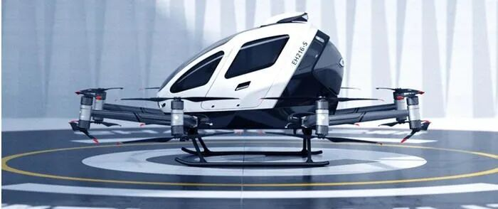
At the beginning of 2024, commercialization of autonomous cars in China appeared to be accelerating. But just as companies working on self-driving vehicles were preparing for what many saw as the eve of large-scale commercialization, autonomous aircraft suddenly entered the spotlight in an unexpected way.
On March 18, EHang, a Chinese company focused on urban air mobility, listed its EH216-S autonomous passenger aircraft—the country’s first mass-market “air taxi” of its kind—on Taobao at an official price of RMB 2.39 million.
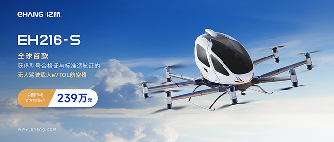
▲ Source: EHang official website
Search Taobao for “EHang EH216-S” and you can find this RMB 2.39 million product listed with home delivery. As a consumer-facing launch channel, Taobao was at that point showing zero sales for what EHang describes as the world’s first certified autonomous passenger aircraft—leaving the first purchase to some particularly adventurous customer.
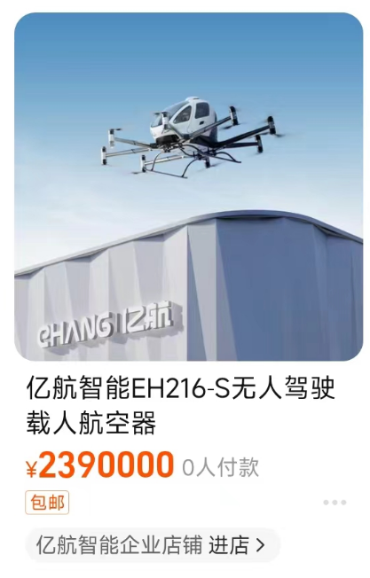
The product page gives more details. The aircraft seats up to two people, is 100% electric, takes off and lands vertically, and supports autonomous flight, intelligent navigation, and precision takeoff and landing.
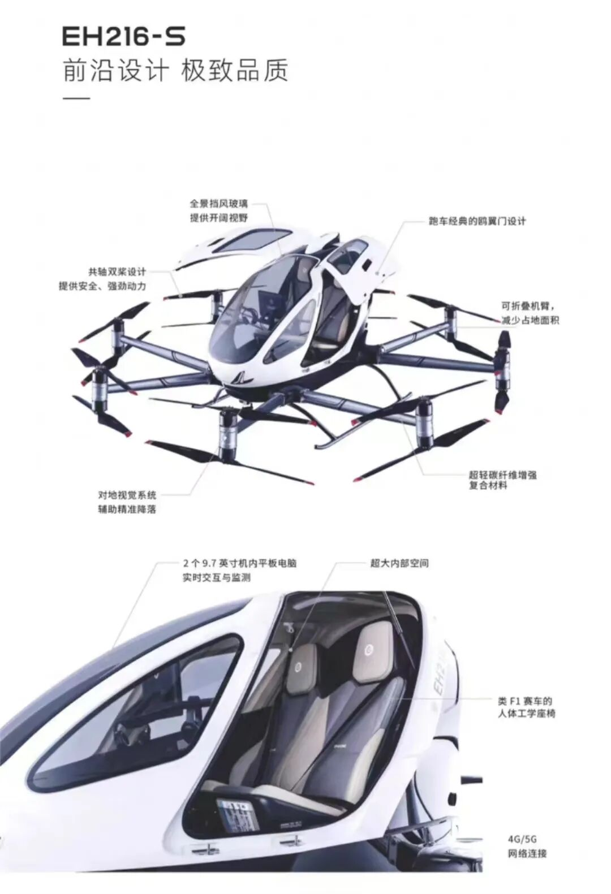
According to EHang’s specifications, the EH216-S is 1.93 meters tall, has a maximum range of 30 km, and a maximum speed of 130 km/h. Its main use case therefore appears to be short- and medium-distance urban travel, with advantages such as avoiding road congestion, flexible vertical takeoff and landing, and zero direct emissions.
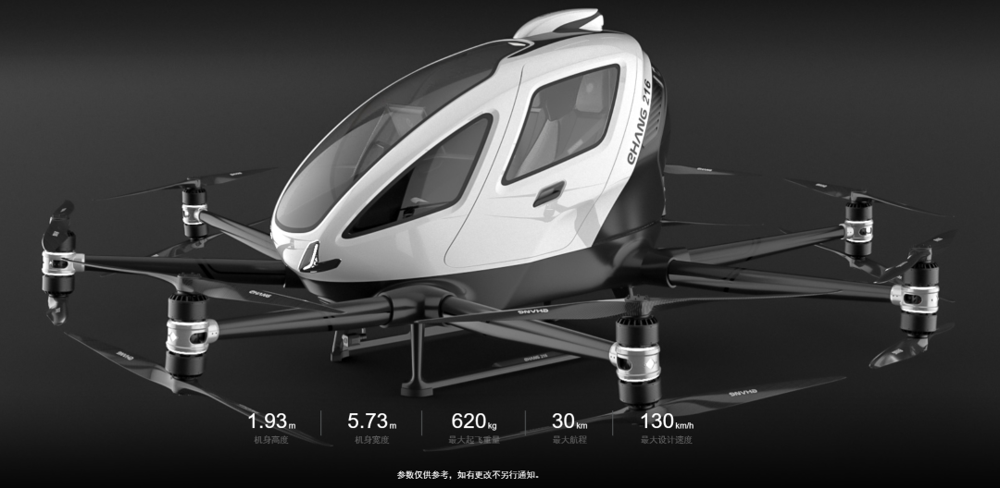
EHang’s new Taobao store also listed another autonomous aircraft, the VT-30, aimed at longer-distance travel. Its listed price was RMB 9.99 million. Compared with the EH216-S, the VT-30 is 2.4 meters tall, has a maximum range of 300 km, and a maximum flight time of 100 minutes.
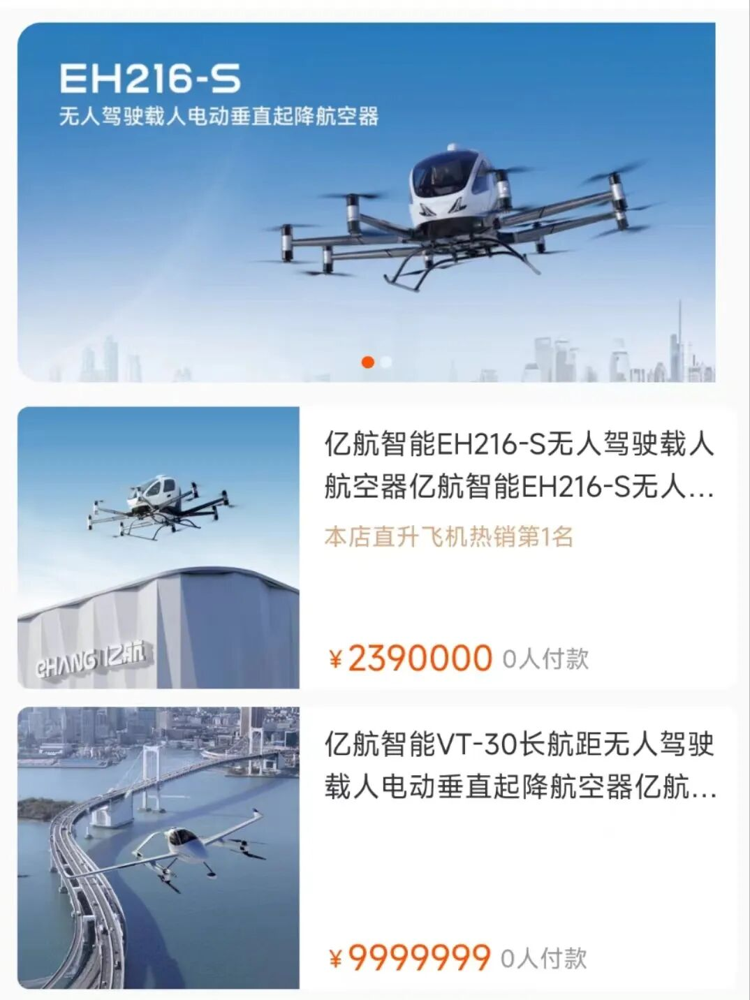
Putting an autonomous aircraft on Taobao may sound like a publicity stunt, but the capital market reacted quickly. EHang’s U.S.-listed shares closed up 0.85% that day and at one point rose nearly 30% intraday.
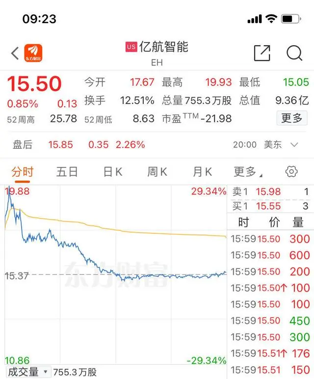
The more important point, however, is regulatory. The EH216-S became the first autonomous passenger aircraft system in the world to receive both a Type Certificate and a Standard Airworthiness Certificate from the Civil Aviation Administration of China. An airworthiness certificate indicates that the aircraft conforms to an approved type design and meets the safety and quality requirements necessary for operation.
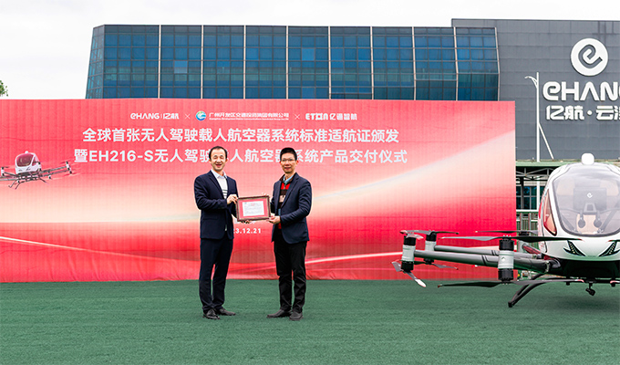
In an interview with National Business Daily, EHang vice president He Tianxing said the company’s goal was “to provide every ordinary citizen with a new form of low-altitude mobility.” Before opening a consumer channel on Taobao, EHang had already delivered more than 200 aircraft to business customers, including 52 deliveries in 2023. The consumer launch was intended both to educate the public and to sell the product.
He added that online sales could allow more people to learn about the technology and become interested in this new lifestyle, increasing the likelihood that people might eventually choose it as a normal transportation option.
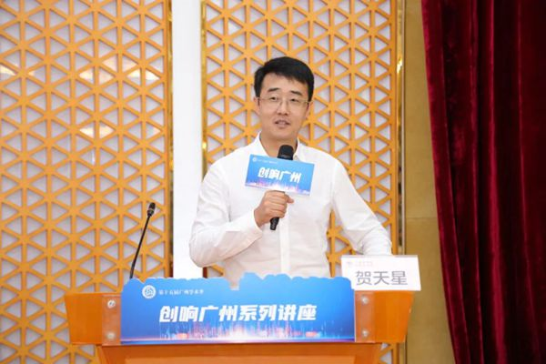
What Kind of Company Is EHang?
Digging deeper into EHang reveals that as early as 2016 the company had unveiled what it described as the world’s first passenger-grade autonomous aerial vehicle, which later appeared at the 2017 World Internet Conference in Wuzhen.
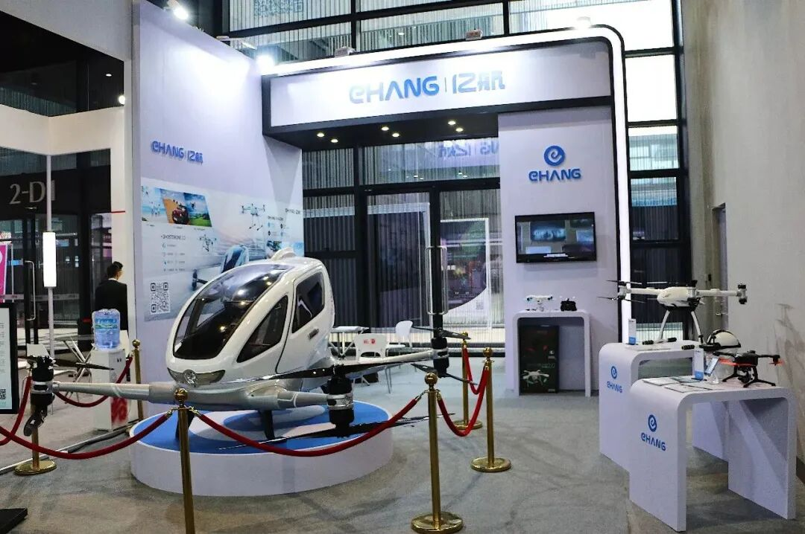
Chinese television covered the aircraft at the time, and reporters even took demonstration rides.
In 2019, EHang listed on Nasdaq, becoming the first publicly traded company focused on urban air mobility and earning the media nickname “the first flying-car stock.”
By 2023, EHang had obtained its Chinese airworthiness approvals, again positioning itself as an industry first. Financially, the company was still in a heavy-investment phase, but in 2023 it reported revenue of RMB 117 million, up 164.97% year over year, while its net loss narrowed to RMB 302 million. It also reported positive cash flow in one quarter.
EHang’s business portfolio spans four major areas: passenger transportation, logistics, smart-city management, and aerial media. Beyond its core transportation and logistics businesses, it has explored intelligent command-and-dispatch systems, drone-based emergency management and firefighting, and coordinated drone-light performances.
The Future of the Low-Altitude Economy
Unlike autonomous driving, autonomous aircraft target another potentially trillion-yuan market: the low-altitude economy. In December 2023, China elevated the low-altitude economy to the status of a strategic emerging industry. At the 2024 Two Sessions, the term appeared in the government work report for the first time as part of an effort to develop new engines of economic growth.
Cars shaped the traditional ground-transport economy by increasing consumer mobility and stimulating economic activity across spatial networks. The urban low-altitude economy, by contrast, refers to an integrated economic system centered on manned and unmanned civil aircraft and driven by low-altitude activities such as passenger transport, cargo transport, and specialized aerial operations.
Just as automobiles are foundational to ground transportation, the low-altitude economy depends on the development of manned and unmanned aircraft. That makes electric vertical takeoff and landing aircraft—eVTOLs—the category EHang is pursuing, a potential candidate to become another trillion-yuan industry after new-energy vehicles. Media reports have estimated that more than 200 companies or organizations worldwide are developing eVTOLs across more than 420 aircraft designs.
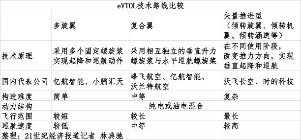
EHang is not alone in China. Xpeng is another well-known company pursuing the field. During the Two Sessions, Xpeng chairman and CEO He Xiaopeng called for faster commercialization of flying cars. On March 8, Xpeng AeroHT’s Traveler X2 completed an autonomous low-altitude flight from Tiande Plaza in Guangzhou’s Tianhe district toward Canton Tower.
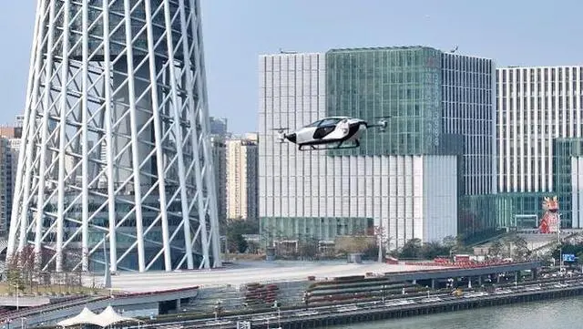
A number of other Chinese startups and manufacturers are also preparing for the eVTOL market, including Autoflight, Vertaxi, Geely’s Aerofugia, Volant, and TCab Tech. But commercial eVTOL operation requires legal approval to fly, and airworthiness certification is a prerequisite. EHang spent roughly seven years moving from its 2016 product launch to certification in 2023.
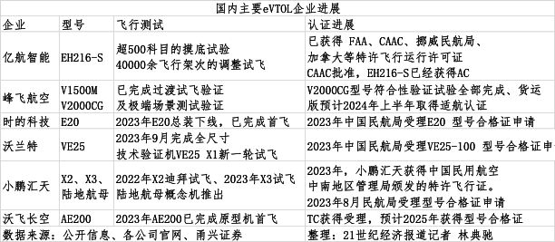
Bringing the story back to the present, EHang’s decision to list an “air taxi” on Taobao may be only a small sign of a coming era of autonomous flight. As more companies enter the field and flight-control and intelligent-perception technologies continue to mature, the crowded skies of science-fiction films may eventually become part of ordinary reality.